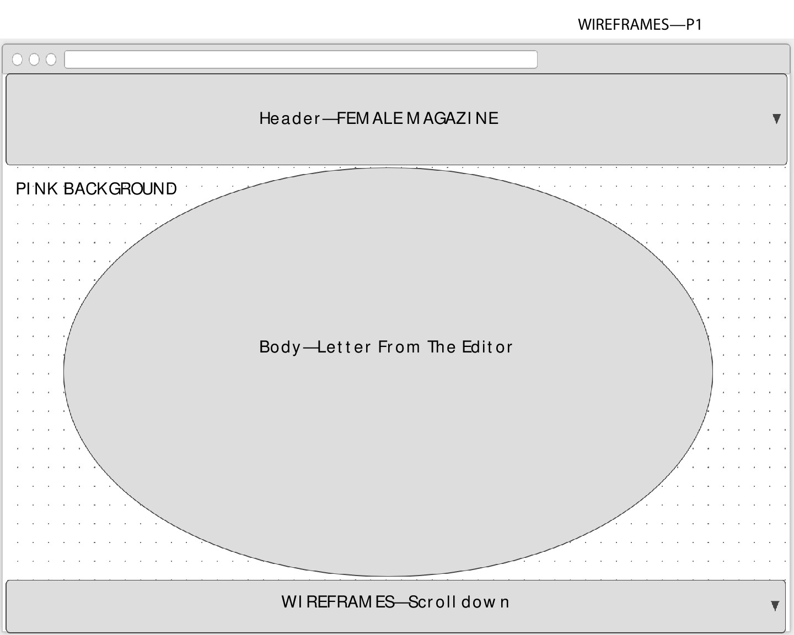
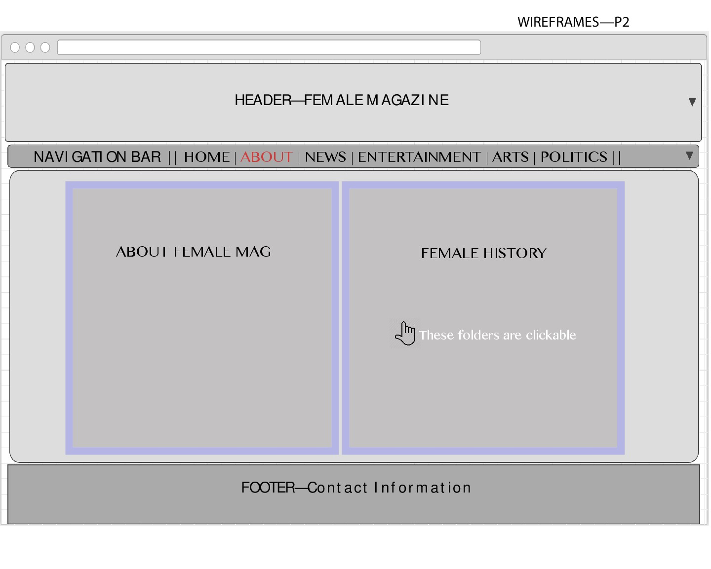
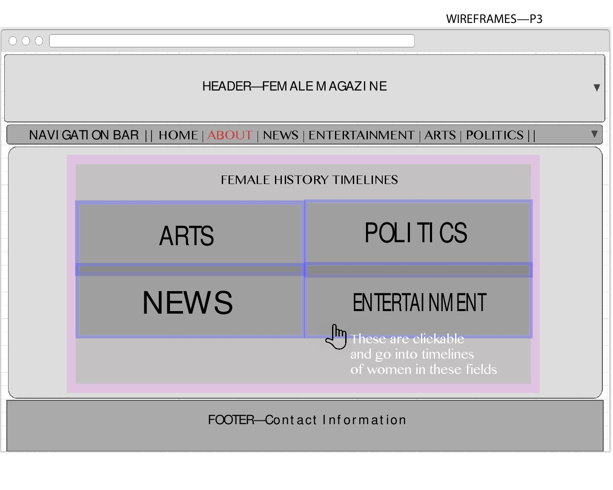
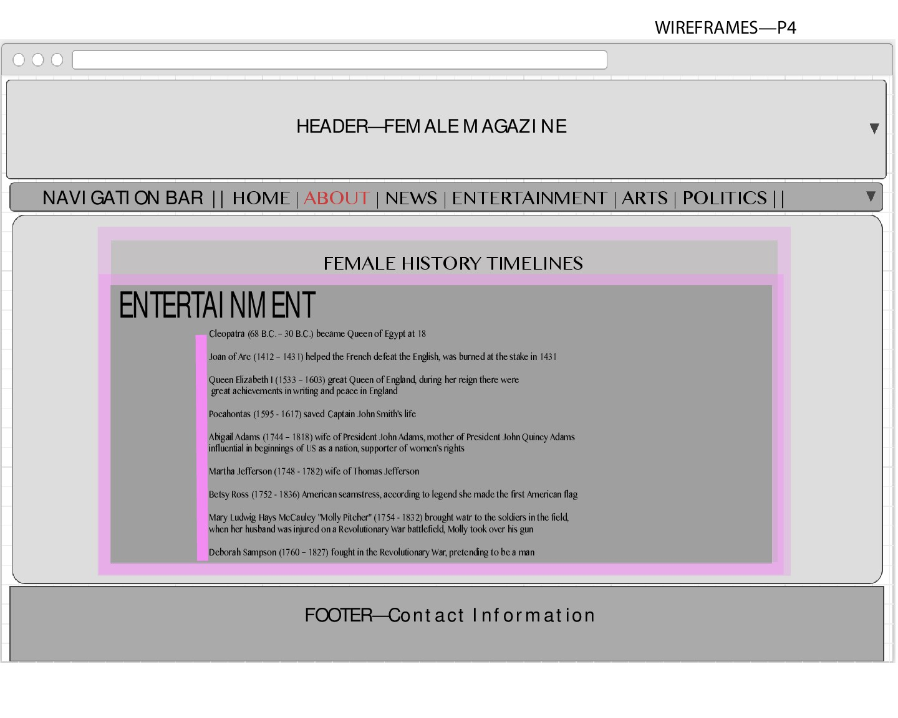
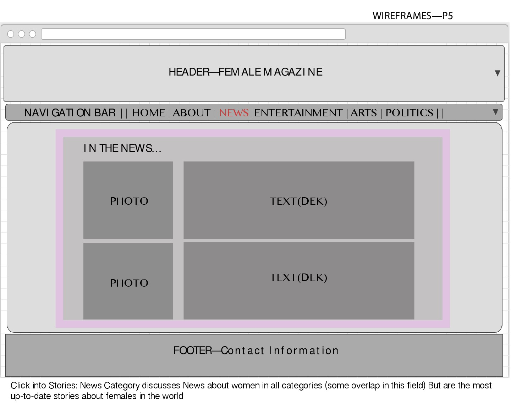
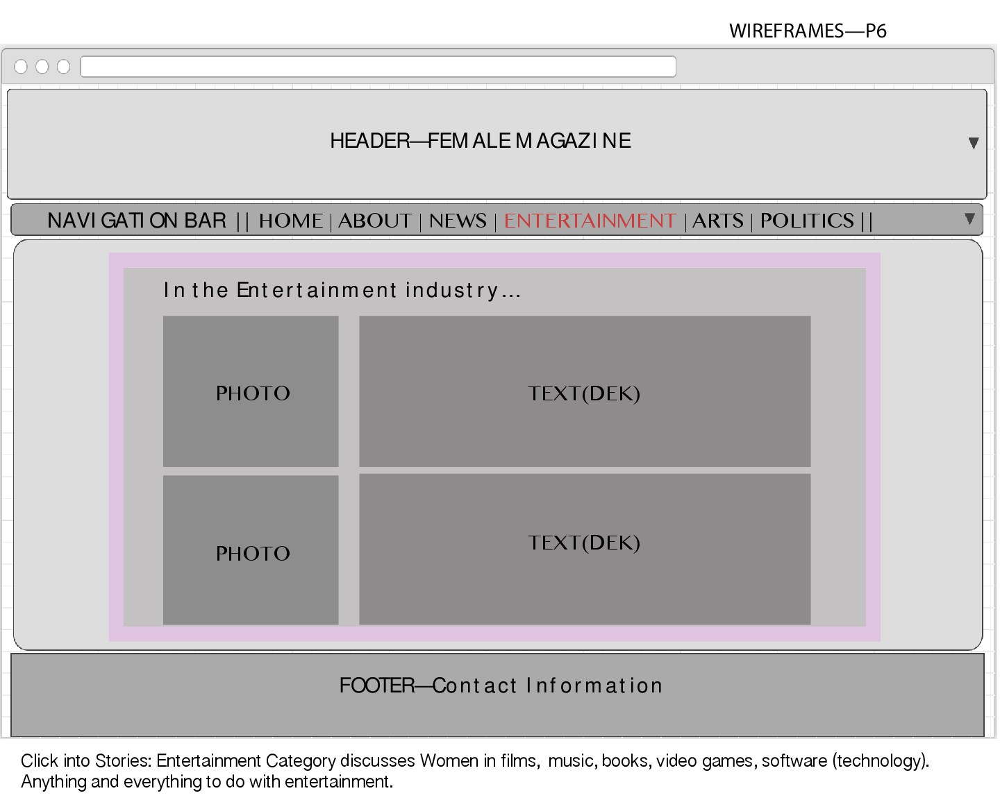

Welcome to Female Magazine,
I am happy to announce the beginning of something empowering, something creative and something for women because there's more of us than there are of them.
This magazine hopes to represent the power of females in the world today and the females of yesterday. Think first female novelist, first female artist, first female singer, actress, then think about today, and how far we've come.
Female has four categories that provide our readers with a wide range of information and news about women in different fields. These are the categories: NEWS, ENTERTAINMENT, ARTS, and POLITICS. NEWS will include articles from the other cateogries as well as the weekly news about females. ENTERTAINMENT includes Films, Books, Technology (women in tech), Singers and, well, anything entertaining. ARTS includes all different types of art from photography to sculpting. And POLITICS includes all news about women in politics.The ABOUT section on the website also includes the "Female History" section where the user can learn a little more about the history of women in different fields. Each field has a timeline of important moments in time.
This publication is hear to be a voice to all women across the globe. FEMALE will work to provide updates to our audience on a weekly-to-biweekly basis.
Mockups





